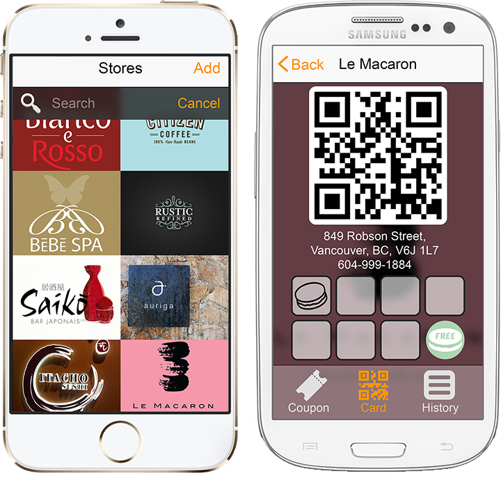

How many loyalty cards you have in your wallet?
How many you left at home?
How many you totally forget?
Discard let you have these cards with you at all times without adding thickness to your wallet. Instead of printing out plastic or paper cards, businesses will simply create virtual loyalty card on Discard. Then, you can simply show your mobile screen, whenever you visit the store. Businesses increase customers' convenience, loyalty and satisfaction, while reducing the cost.
Basically, Discard is a mobile app that replaces the need to carry membership cards. It doesn't require any special hardware, just your smartphone.
